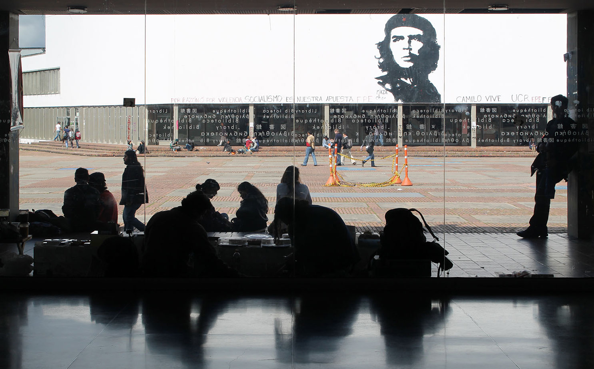

Paraíso folclórico del Huila
MAPA INTERACTIVO


Mapa interactivo
Haz clic en alguno de los pequeños botones para ver información sobre el lugar.
Dato curioso: El municipio recibio varias visitas del libertador Simon Bolivar, en parte esto hizo que varios de sus
sitios turisticos y representativos tuvieran nombres de proceres del país.